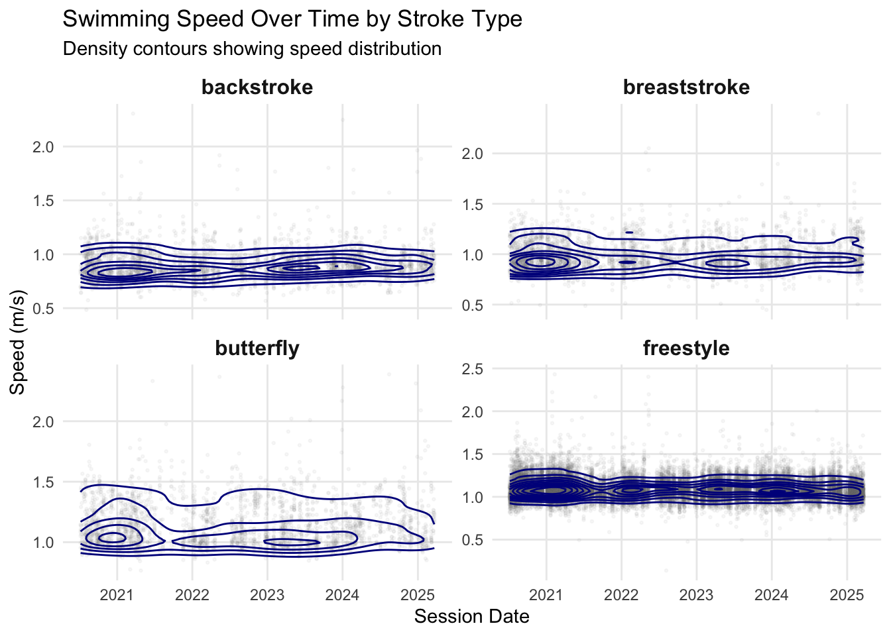

library(FITfileR)
library(dplyr)
library(purrr)
library(utils)
library(ggplot2)
library(hexbin)
library(viridis)
library(gratia)
library(mgcv)
library(tidyr)
library(performance)
library(lubridate)As a swimmer seeking to enhance performance, tracking workout data can offer valuable insights into progress over time. Analysis options for swimming compared to running in Garmin are instead week. I enjoy swimming and data analysis. In this analysis, I’ll explore several years of swimming data extracted from Garmin FIT files to figure out if I am getting faster.
Data Extraction from FIT Files
First, I’ll extract swimming data from all available FIT files. The FITfileR (Smith 2025) package allows us to read Garmin workout files and identify pool swimming sessions.
Identifying Pool Swimming Sessions
So, one can ask Garmin to download all the files. Swim session or activity files are stored in .fit format and located in the DI_CONNECT folder, specifically in the subfolder DI-Connect-Uploaded-Files. File names are rather cryptical, so I first look for files that have “lap_swimming” attribute within.
# Scan directory for all .fit files
all_files <- list.files("/Users/jb/Documents/BW_analysis/Swim",
pattern = "\\.fit$",
full.names = TRUE)
# Check each file to identify pool swimming sessions
n <- length(all_files)
ok <- logical(n)
pb <- txtProgressBar(min = 0, max = n, style = 3)
for (i in seq_along(all_files)) {
path <- all_files[i]
# Safely check if file contains pool swimming data
ok[i] <- possibly(function(p) {
sp <- getMessagesByType(readFitFile(p), "sport")
isTRUE(any(sp$sport == "swimming" & sp$sub_sport == "lap_swimming",
na.rm = TRUE))
}, otherwise = FALSE)(path)
setTxtProgressBar(pb, i)
}
close(pb)
pool_lap_fits <- all_files[ok]
cat("\nFound", length(pool_lap_fits), "pool-lap swim files\n")Extracting Session Information
Now, by examining several lap_swimming attributes containing files, I found that pool length in meters and activity data are stored in session, and length contains the workout information.
sessions <- map_dfr(pool_lap_fits, function(f) {
sess <- tryCatch(getMessagesByType(readFitFile(f), "session"),
error = function(e) NULL)
if (is.null(sess)) return(NULL)
tibble(
file = f,
session_date = as.Date(sess$start_time),
pool_length = sess$pool_length
)
}) %>%
group_by(session_date) %>%
mutate(session_number = row_number()) %>%
ungroup()
# Extract individual length (lap) data
raw_laps <- map_dfr(pool_lap_fits, function(f) {
lengths <- tryCatch(getMessagesByType(readFitFile(f), "length"),
error = function(e) NULL)
if (is.null(lengths)) return(NULL)
lengths %>% mutate(file = f)
})Data Processing and Set Detection
Swimming workouts typically consist of multiple sets with rest periods between each set. I’ll identify these sets and calculate the relative positions of each lap within the workout and set itself:
#Identify sets based on idle periods
laps_with_sets <- raw_laps %>%
group_by(file) %>%
mutate(
lap_index = row_number(),
total_laps = n(),
pos_within_workout = lap_index / total_laps,
# New set starts after each idle period
set_id = cumsum(length_type == "idle") + 1
) %>%
ungroup()
# Process active laps only and calculate set-specific metrics
final_tbl <- laps_with_sets %>%
filter(length_type == "active", swim_stroke != "drill") %>%
group_by(file, set_id) %>%
mutate(
lap_in_set = row_number(),
set_size = n(),
pos_within_set = lap_in_set / set_size
) %>%
ungroup() %>%
left_join(sessions, by = "file") %>%
select(
session_date,
session_number,
pool_length,
total_elapsed_time,
set_id,
lap_index,
lap_in_set,
pos_within_workout,
pos_within_set,
swim_stroke
)
# Save processed data
write.csv(final_tbl, "all_swim_laps.csv", row.names = FALSE)You can load it directly in R:
final_tbl <- read.csv("https://jbogomolovas2.github.io/julius-blog/posts/post-with-code/all_swim_laps.csv")I’ll identify gaps in training and analyze data from July 2020 onward to have a nice, recent, and consistent training segment to analyze.
# Identify training gaps
sessions_df <- final_tbl %>%
distinct(session_date) %>%
arrange(session_date)
gaps_df <- sessions_df %>%
# 1) make sure session_date is a Date
mutate(session_date = as.Date(session_date)) %>%
# 2) grab the “previous” date
mutate(prev_date = lag(session_date)) %>%
# 3) compute gap in days
mutate(gap_days = as.numeric(difftime(session_date, prev_date, units = "days"))) %>%
# 4) drop the first row (where lag was NA)
filter(!is.na(gap_days))
# Show top 5 largest training gaps
top5_gaps <- gaps_df %>%
arrange(desc(gap_days)) %>%
slice(1:5) %>%
rename(
end_date = session_date,
start_date = prev_date
)
print(top5_gaps)Let’s perform some data cleaning: select a segment, calculate swim speeds, remove super-fast laps (I wish they were real!), and create a simple time variable.
final_tbl_2020 <- final_tbl %>%
# 1) ensure session_date is Date
mutate(session_date = as.Date(session_date)) %>%
# 2) filter from July 7, 2020 onward
filter(session_date >= ymd("2020-07-07")) %>%
# 3) compute speed and factor columns
mutate(
speed = pool_length / total_elapsed_time,
swim_stroke = factor(swim_stroke),
session_id = factor(session_date) # or combine with session_number if you need uniqueness
) %>%
# 4) remove unrealistically fast laps
filter(speed < 2.5) %>%
# 5) sort and compute days since first session
arrange(session_date) %>%
mutate(
days_since_start = as.integer(
difftime(session_date,
min(session_date),
units = "days")
)
)Visualizing Speed Distributions
Let’s examine how swimming speed varies over time for different strokes. As I have a bunch of laps, let’s plot them as densities.
p_contour <- ggplot() +
geom_point(data = final_tbl_2020,
aes(x = session_date, y = speed),
alpha = 0.05, size = 0.5, color = "grey50") +
geom_density_2d(data = final_tbl_2020,
aes(x = session_date, y = speed),
color = "darkblue", bins = 10, linewidth = 0.5) +
facet_wrap(~ swim_stroke, scales = "free_y", ncol = 2) +
labs(x = "Session Date",
y = "Speed (m/s)",
title = "Swimming Speed Over Time by Stroke Type",
subtitle = "Density contours showing speed distribution") +
theme_minimal() +
theme(legend.position = "none",
panel.grid.minor = element_blank(),
strip.text = element_text(size = 12, face = "bold"))
print(p_contour)
Statistical Modeling with GAMs
I have something that is more or less monomodal. Therefore, my average swim speed would be a good indicator of my progress. However, in workouts, I do different sets, such as sprints, cooldowns, etc. Which vary in intensity, length, and position within the workout. I hypothesize that these factors significantly affect “average” swim speed and need to be accounted for. I don’t expect them to be linearly related, so I enter the magical world of Generalized Additive Models (GAMs). I will be using mgcv (Wood 2011) for fitting, gratia (Simpson 2024) for visualization, and performance (Lüdecke et al. 2021) for model assessment. I will start with a simple speed ~ time model and try to add covariates to get a better fit, closer to “average” swim speed. As I am working with a rather large dataset, I will use the bam function and a few corresponding tweaks: discrete = TRUE and method = "fREML" which enables faster computation for extensive datasets. By examining the swimming speed distribution, I clearly see some tails, so I will use the scaled t-distribution family = scat().
# Model 1: Simple time trend by stroke
simple <- bam(
speed ~ swim_stroke + pool_length +
s(days_since_start, by = swim_stroke, bs = "gp"),
data = final_tbl_2020,
discrete = TRUE,
family = scat(), # Scaled t-distribution for robustness
method = "fREML"
)
# Model 2: Add position effects (fatigue within workout/set)
set_location <- bam(
speed ~ swim_stroke + pool_length +
s(days_since_start, by = swim_stroke, bs = "gp") +
s(pos_within_workout, by = swim_stroke) +
s(pos_within_set, by = swim_stroke),
data = final_tbl_2020,
discrete = TRUE,
family = scat(),
method = "fREML"
)
# Model 3: Add session random effects
set_location_re <- bam(
speed ~ swim_stroke + pool_length +
s(days_since_start, by = swim_stroke, bs = "gp") +
s(pos_within_workout, by = swim_stroke) +
s(pos_within_set, by = swim_stroke) +
s(session_id, bs = "re"), # Random effect for sessions
data = final_tbl_2020,
discrete = TRUE,
family = scat(),
method = "fREML"
)
# Compare model performance
model_comparison <- compare_performance(simple, set_location, set_location_re)
print(model_comparison)# Comparison of Model Performance Indices
Name | Model | AIC (weights) | AICc (weights)
-------------------------------------------------------------
simple | bam | -60982.5 (<.001) | -60982.4 (<.001)
set_location | bam | -78903.1 (<.001) | -78902.5 (<.001)
set_location_re | bam | -81777.9 (>.999) | -81765.5 (>.999)
Name | BIC (weights) | R2 | RMSE | Sigma
----------------------------------------------------------
simple | -60631.1 (<.001) | 0.204 | 0.123 | 1.000
set_location | -78017.1 (>.999) | 0.449 | 0.101 | 1.000
set_location_re | -77560.3 (<.001) | 0.475 | 0.099 | 1.000model_summary<- summary(set_location_re)
print(model_summary)
Family: Scaled t(3.729,0.064)
Link function: identity
Formula:
speed ~ swim_stroke + pool_length + s(days_since_start, by = swim_stroke,
bs = "gp") + s(pos_within_workout, by = swim_stroke) + s(pos_within_set,
by = swim_stroke) + s(session_id, bs = "re")
Parametric coefficients:
Estimate Std. Error t value Pr(>|t|)
(Intercept) 0.8914292 0.0049522 180.01 <2e-16 ***
swim_strokebreaststroke 0.0613416 0.0052787 11.62 <2e-16 ***
swim_strokebutterfly 0.2525302 0.0047424 53.25 <2e-16 ***
swim_strokefreestyle 0.2141422 0.0031635 67.69 <2e-16 ***
pool_length -0.0017971 0.0001487 -12.09 <2e-16 ***
---
Signif. codes: 0 '***' 0.001 '**' 0.01 '*' 0.05 '.' 0.1 ' ' 1
Approximate significance of smooth terms:
edf Ref.df F p-value
s(days_since_start):swim_strokebackstroke 6.088 6.963 7.448 < 2e-16
s(days_since_start):swim_strokebreaststroke 5.747 6.583 4.031 0.000274
s(days_since_start):swim_strokebutterfly 7.962 8.641 7.520 < 2e-16
s(days_since_start):swim_strokefreestyle 8.047 8.390 7.933 < 2e-16
s(pos_within_workout):swim_strokebackstroke 2.495 3.100 4.059 0.006375
s(pos_within_workout):swim_strokebreaststroke 7.311 8.292 20.984 < 2e-16
s(pos_within_workout):swim_strokebutterfly 6.725 7.816 12.175 < 2e-16
s(pos_within_workout):swim_strokefreestyle 8.375 8.888 312.136 < 2e-16
s(pos_within_set):swim_strokebackstroke 8.232 8.778 163.531 < 2e-16
s(pos_within_set):swim_strokebreaststroke 8.347 8.804 514.321 < 2e-16
s(pos_within_set):swim_strokebutterfly 8.474 8.888 500.872 < 2e-16
s(pos_within_set):swim_strokefreestyle 8.838 8.990 1051.382 < 2e-16
s(session_id) 390.899 449.000 8.486 < 2e-16
s(days_since_start):swim_strokebackstroke ***
s(days_since_start):swim_strokebreaststroke ***
s(days_since_start):swim_strokebutterfly ***
s(days_since_start):swim_strokefreestyle ***
s(pos_within_workout):swim_strokebackstroke **
s(pos_within_workout):swim_strokebreaststroke ***
s(pos_within_workout):swim_strokebutterfly ***
s(pos_within_workout):swim_strokefreestyle ***
s(pos_within_set):swim_strokebackstroke ***
s(pos_within_set):swim_strokebreaststroke ***
s(pos_within_set):swim_strokebutterfly ***
s(pos_within_set):swim_strokefreestyle ***
s(session_id) ***
---
Signif. codes: 0 '***' 0.001 '**' 0.01 '*' 0.05 '.' 0.1 ' ' 1
R-sq.(adj) = 0.475 Deviance explained = 42.7%
fREML = 65732 Scale est. = 1 n = 39572appraise(set_location_re)Based on model comparison, the most complex one seems to be doing the best. Some sanity check: indeed, backstroke is my slowest stroke, whereas butterfly is the fastest, and swimming in a 50 m pool vs. a 25-yard pool slows me a bit. In terms of fixed effects, the model effectively captured them. Smooth terms revealed significant nonlinear trends over time for all strokes, even when accounted for lap temporal position and session as a random factor. So let’s have a look.
gratia::draw(set_location_re,select=1:4 )I am getting faster with my strokes, but I am plateauing with my freestyle. Let’s create predictions from our best model and overlay them on the actual data:
# Create prediction dataset
pred_data <- expand.grid(
days_since_start = seq(min(final_tbl_2020$days_since_start),
max(final_tbl_2020$days_since_start),
length.out = 200),
swim_stroke = levels(final_tbl_2020$swim_stroke),
stringsAsFactors = FALSE
)
# Set other variables to median/reference values
pred_data$pool_length <- min(final_tbl_2020$pool_length) #most of my workouts are in 25 yards
pred_data$pos_within_workout <- median(final_tbl_2020$pos_within_workout)
pred_data$pos_within_set <- median(final_tbl_2020$pos_within_set)
pred_data$session_id <- levels(final_tbl_2020$session_id)[1]
# Generate predictions (excluding random effects)
predictions <- predict(set_location_re,
newdata = pred_data,
exclude = "s(session_id)",
se.fit = TRUE)
pred_data$fit <- predictions$fit
pred_data$se <- predictions$se.fit
# Validation plot
p_validation <- ggplot() +
# Scatter with very low alpha for context
geom_point(data = final_tbl_2020,
aes(x = days_since_start, y = speed),
alpha = 0.05, size = 0.5, color = "grey50") +
# 2D density contour lines
geom_density_2d(data = final_tbl_2020,
aes(x = days_since_start, y = speed),
color = "darkblue", bins = 10, size = 0.5) +
# Model smooth lines only - no CI
geom_line(data = pred_data,
aes(x = days_since_start, y = fit),
color = "red", size = 1.5) +
# Facet by stroke type
facet_wrap(~ swim_stroke, scales = "free_y", ncol = 2) +
# Labels and theme
labs(x = "Days Since Start",
y = "Speed (m/s)",
title = "Swimming Speed Over Time by Stroke Type",
subtitle = "Density contours with GAM smooth curves") +
theme_minimal() +
theme(legend.position = "none",
panel.grid.minor = element_blank(),
strip.text = element_text(size = 12, face = "bold"))Warning: Using `size` aesthetic for lines was deprecated in ggplot2 3.4.0.
ℹ Please use `linewidth` instead.print(p_validation)Although structured test sets would be ideal for tracking progress, even this messy lap-level data can already provide some insights. Overall, the model indicates that my backstroke, breaststroke, and butterfly are improving (which I have noticed myself), while freestyle still lags behind. Extending the analysis to quartiles or deciles of lap speeds should provide a more comprehensive picture of training progress and pacing strategies.
References
Lüdecke, Daniel, Mattan S. Ben-Shachar, Indrajeet Patil, Philip Waggoner, and Dominique Makowski. 2021. “Performance: An r Package for Assessment, Comparison and Testing of Statistical Models” 6: 3139. https://doi.org/10.21105/joss.03139.
Simpson, Gavin L. 2024. “Gratia: Graceful Ggplot-Based Graphics and Other Functions for GAMs Fitted Using Mgcv.” https://gavinsimpson.github.io/gratia/.
Smith, Mike. 2025. “FITfileR: Read FIT Files Using Only Native r Code.” https://github.com/grimbough/FITfileR.git.
Wood, S. N. 2011. “Fast Stable Restricted Maximum Likelihood and Marginal Likelihood Estimation of Semiparametric Generalized Linear Models” 73. https://doi.org/10.1111/j.1467-9868.2010.00749.x.